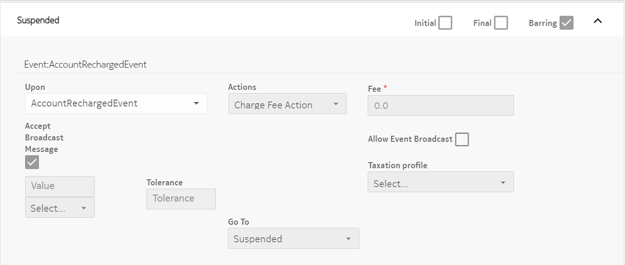
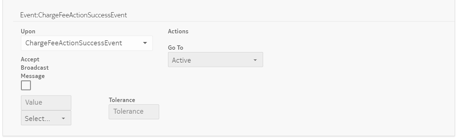

Now the OCS subscribers can subscribe to bundles or subscriptions without having enough balance in their accounts to pay for them. The bundles or subscriptions are added to the subscribers account but are not active, instead they are placed in the suspended lifecycle state. This feature can be controlled by the application preference Subscription Creation On Insufficient Balance.
When additional funds are added to the subscriber’s account and if there is enough balance, then the added bundle or bundles are moved to the Active lifecycle state and the requisite funds are deducted from the balance of the subscriber.
This feature allows a OCS subscriber to subscribe or purchase a new bundle or subscription when they have insufficient funds in their account. Purchased bundles are put in the configured lifecycle state for insufficient funds (this can be in the Suspended lifecycle state) and when there is enough balance to fund all bundles in the configured state then the bundles are moved into the Active lifecycle state.
When bundles or subscriptions are added, any discount available for the bundle or the subscription must be considered before deducting the funds for the subscription.
Subscription creation
- As per the existing implementation during subscription creation and after primarily validations, the account balance is checked to see if it is enough to deduct bundle fee or to do a fee override after considering all the applicable discounts. If not, then the request is rejected. In the current feature, before rejection the new system flag is checked and if it is set, then the logic proceeds further and the subscription is created.
- A new attribute (barredDueToInsufficientFund) needs to be added in the subscription instance to indicate that this subscription is suspended due to insufficient balance.
- As per the last steps of subscription creation, an event is triggered so that it
transfers the subscription Active state to Suspended/Inactive
state as per the lifecycle configuration. The NotEnoughFunds event must
be configured in the lifecycle to transfer from Active state to
Suspended/Inactive state. This lifecycle configuration is mandatory
for the feature to work. This configuration is done in any lifecycle Entity
(ELC) or Periodic (PLC).Activation Time specifies the time when the subscription was first activated. If activation time is not provided, the subscription remains activated and this field uses the current time. In this scenario, subscription activation is governed either by lifecycle configuration and account or present status of device entities. As in this case, the subscription remains activated and it fails due to insufficient balance.
 Note:
Note: - For example, following is the suggested configuration of Lifecycle (ELC) for this event:
 Note:
Note:Account recharge or subscription activation
- When the account is credited with positive balance, then an event AccountRechargeEvent is triggered which is broadcasted to all the linked subscriptions.
- If a new discount is added to the Device, thereby making the account balance sufficient for subscription fee deduction, then the Trigger API in the Lifecycle module can be used to trigger AccountRechargeEvent, configured in lifecycle of that account or specific subscription. For more details on using the API, refer to the Swagger API documentation.
- Following transition needs to be defined in Life-cycle:Figure: Event:AccountRechargedEvent Figure: Event:ChargeFeeActionSuccessEvent 
{kind=link}
{kind=link}